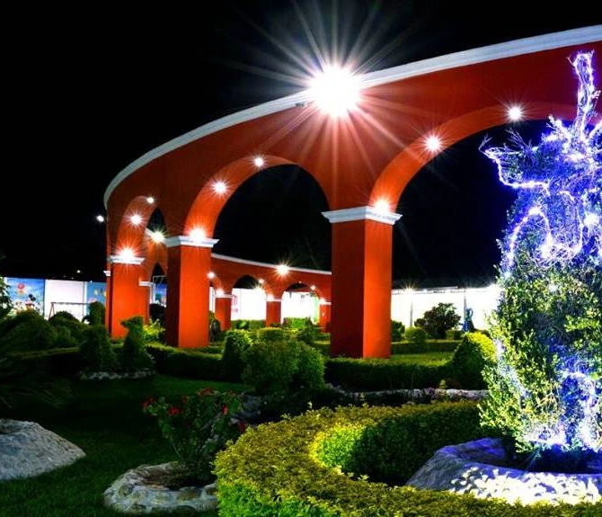
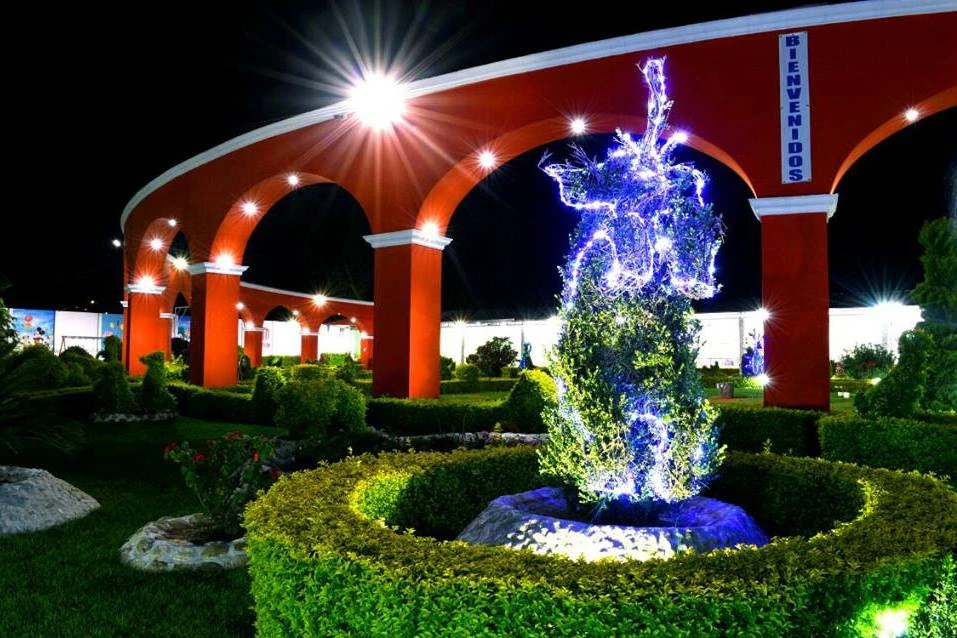
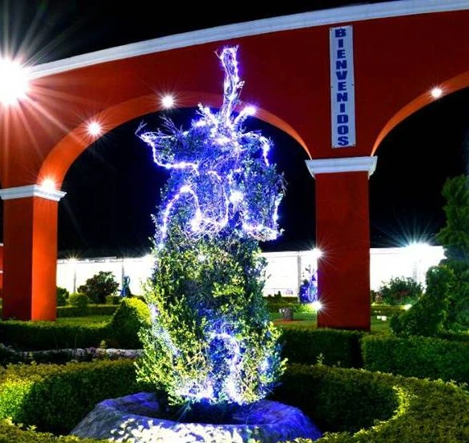

MÁS QUE UN LUGAR
Donde cada
historia se vuelve
inolvidable.
Entre jardines, arquitectura y atmósferas que inspiran, cada celebración encuentra su propio escenario. Porque los mejores recuerdos merecen vivirse en grande.
DESCUBRE NUESTROS ESPACIOS
DETALLES QUE PERDURAN ↗
UNA ATMÓSFERA ÚNICA / OAXACA
EL ENCANTO DE CADA MOMENTO
No es solo un evento.
Es tu historia en escena.
02 — 04
Desde el primer brindis hasta la última canción. Cada instante cuenta.
NUESTROS ESPACIOS
La magia está
en cada rincón.
Un lugar que se transforma con tus ideas y acompaña cada momento de la celebración.
Arquitectura · Jardines · Iluminación · Celebraciones
POSTALES DEL RECINTO
Una mirada.
Mil emociones.
Descubre detalles del recinto a través de nuestra selección fotográfica.
Jardines y arquitectura
Celebraciones con estilo
Noches con magia
Espacios para compartir
Detalles que enamoran
0105
DESLIZA PARA EXPLORAR ↔
HAY MUCHAS RAZONES PARA CELEBRAR
Cualquier ocasión.
Una experiencia única.
AQUÍ COMIENZAN LOS GRANDES RECUERDOS
En el corazón
de Oaxaca.
Carretera a Atzompa 1851
Agencia de Policía Montoya
Oaxaca de Juárez, Oaxaca.
17.06187° N • 96.75722° O
HAGAMOS QUE SUCEDA
Tu gran día
merece algo grande.
Cuéntanos qué imaginas. El siguiente capítulo de tu historia puede comenzar aquí.
CONTACTO TELEFÓNICO PÚBLICO: 951 177 9125 · CONFIRMAR DISPONIBILIDAD Y DATOS DE CONTACTO